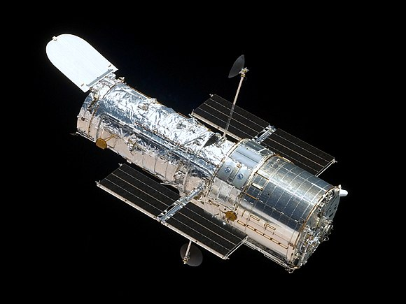

Le télescope spatial Hubble est le plus célèbre des observatoires dans l'espace. Depuis qu'il a été placé en orbite terrestre basse par la navette Discovery en avril 1990, Hubble a envoyé une impressionnante quantité de données et des images incroyablement détaillées d'objets spatiaux.

|
Hubble a pris des images de la Lune, de Pluton et de toutes les planètes du Système solaire à l'exception de Mercure (trop proche du Soleil). Il a aussi envoyé des clichés stupéfiants de nuages de poussière où des étoiles meurent et naissent, ainsi que de milliers de galaxies. La photo de droite montre la nébuleuse du Papillon, un nuage de gaz et de poussières éjecté par une étoile mourante. Elle a été prise par la caméra la plus récente et la plus performante de Hubble, installée en 2009.
En 1962, les premiers signaux télévisés étaient transmis en direct entre les Etats Unis et la France. Les satellites actuels transmettent les émission de centaines de chaines de télévision numérique vers les paraboles (antaine) des particuliers. Nous pouvons assister aux événement se déroulant partout dans le monde, tandis que les téléphones satellites permentent d'appeler quelqu'un depuis le désert.
Un site a été crée pour répertorier les news, images et vidéo du satellite.